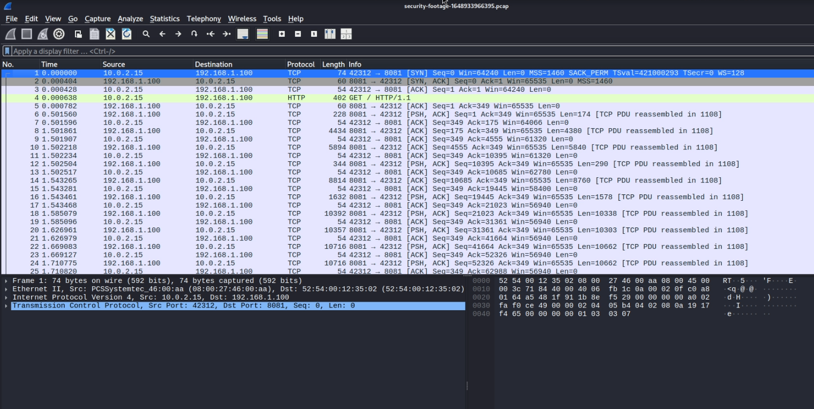
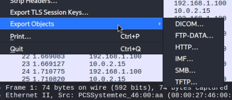
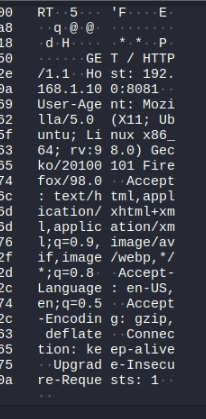
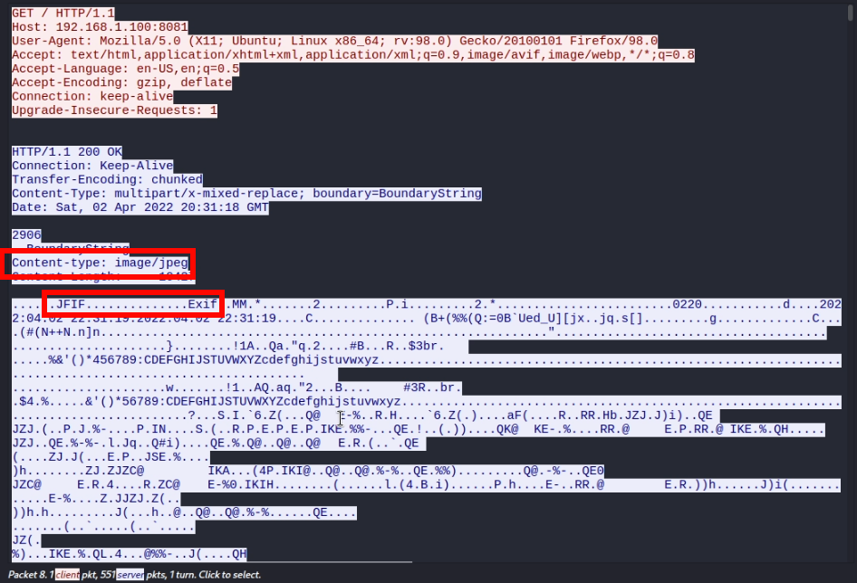
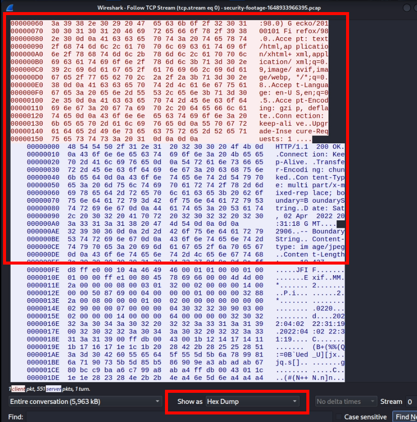
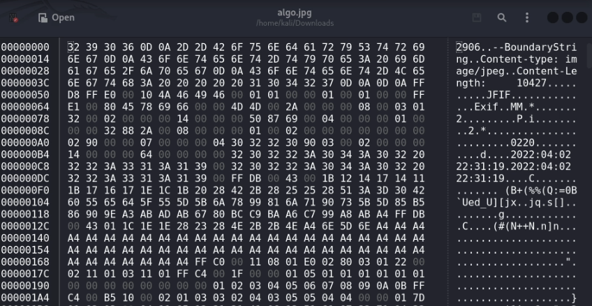
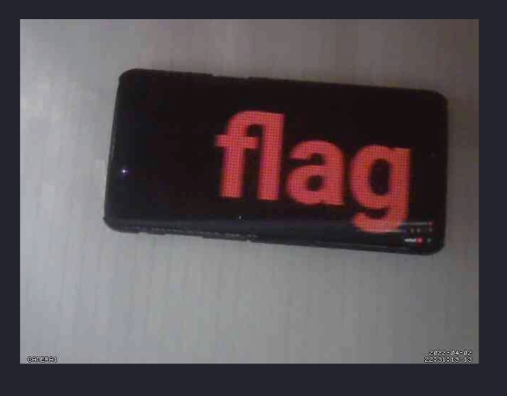
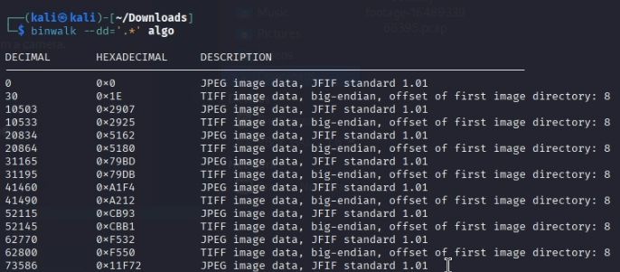
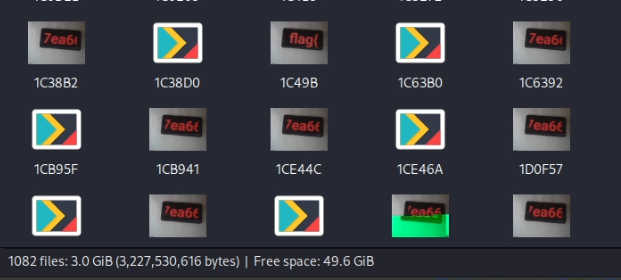

En este write-up, analizaremos un archivo .pcap con Wireshark para recuperar imágenes perdidas de una cámara de seguridad, aplicando técnicas de análisis forense digital.
El reto nos proporciona un archivo de captura de tráfico de red (PCAP) que debemos analizar para encontrar una grabación de una cámara.
Para ello, utilizaremos Wireshark, una herramienta gratuita y multiplataforma para inspección profunda de paquetes.
Lo primero que haré es ver si se puede exportar algún objeto directamente:
Para ahorraros el disgusto, ninguno de estos funciona.
El primer paquete GET contiene esta cabecera, podríamos seguir los paquetes para ver qué podemos sacar:
Parece que hemos encontrado algo aquí. Se trata de una cabecera que indica la descarga de lo que parece ser una imagen:
Además, el JFIF indica que el archivo es una imagen
Ahora tendremos que hacer algo un poco complicado: descargarnos el paquete en hexadecimal, quitarle las cabeceras y quedarnos únicamente con el archivo:
Tenemos que quitar todo eso
Para editar el hexadecimal, podemos usar la herramienta Ghex de Linux.
Una vez quitadas las cabeceras, nos quedará el siguiente archivo:
Pensé que sería un video o un gif, pero no, es una cadena de imágenes superpuestas.
Tendremos que extraer todas las imágenes del interior. Usaré binwalk para ello:
Esto nos extraerá todas las imágenes imbuidas en el archivo original.
1082 imágenes, 3 Gb :)
No os mentiré, no sé si hice mal el reto o si lo hice pero no de la manera correcta.
Pero ya quedaría resuelto el desafío, solo tenemos que ir completando la flag con las imágenes que hemos sacado.
Con este reto hemos aprendido a identificar tráfico relevante en WireShark y extraer archivos de paquetes pcap.